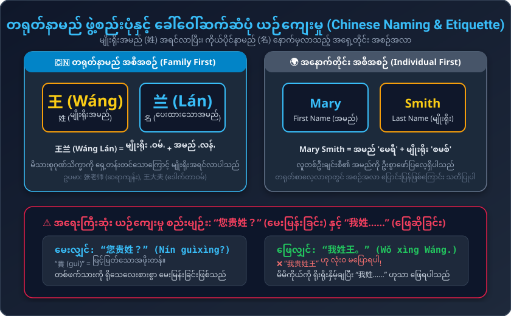
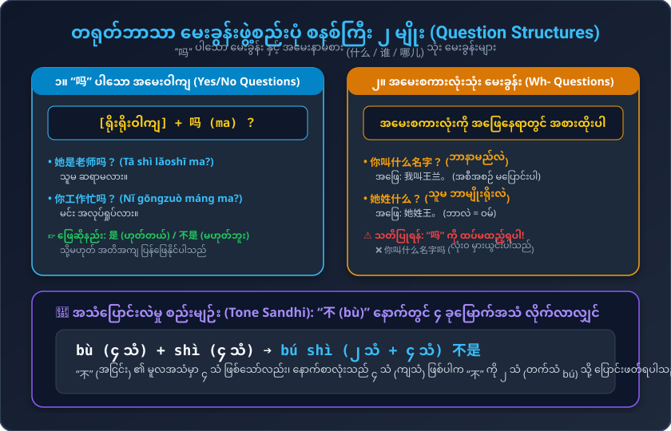

မိတ်ဆက်ခြင်း (Making an Acquaintance)၊ အမည်နှင့် မျိုးရိုးမေးနည်း၊ 是/不是 သုံးစွဲပုံ၊ "吗" နှင့် အမေးစကားလုံးများ အသုံးပြုပုံ
အမည်၊ မျိုးရိုးနှင့် မိတ်ဆက်ရာတွင် နေ့စဉ်သုံး အရေးကြီးဆုံး စကားစုများ
မိတ်ဆွေအချင်းချင်း မိတ်ဆက်ခြင်းနှင့် ဆရာ/လူကြီးထံ ရိုသေစွာ မေးမြန်းခြင်း
မျိုးရိုးအမည် (姓) အရင်လာပြီး ကိုယ်ပိုင်နာမည် (名) နောက်မှလာသည့် အရှေ့တိုင်းယဉ်ကျေးမှုနှင့် “您贵姓” သုံးစွဲနည်း

တရုတ်လူမျိုးများသည် မိသားစုမျိုးရိုး (姓) ကို တစ်ဦးချင်းအမည် (名) ထက် ဦးစားပေးသဖြင့် အမြဲရှေ့တွင်ထားပါသည်။ ကျောင်းတွင်ဖြစ်စေ၊ ရုံးတွင်ဖြစ်စေ ဆရာ/လူကြီးများကို ခေါ်ဆိုလျှင် မျိုးရိုး + ရာထူး တွဲ၍ ခေါ်ပါသည်: • 张老师 (ဆရာကျန်း) • 王大夫 (ဒေါက်တာဝမ်)
“贵姓” (လူကြီးမင်း၏ မြင့်မြတ်သောမျိုးရိုး) သည် လေးစားမှုပြအသုံးအနှုန်းဖြစ်၍ တစ်ဖက်သားကို မေးမြန်းရာတွင်သာ သုံးရသည်။ မိမိကိုယ်ကို ဖြေဆိုရာတွင် “我贵姓……” ဟု လုံးဝ (လုံးဝ) မပြောရပါ! မိမိကိုယ်ကို ရိုးရိုးနှိမ့်ချပြီး “我姓王” (ဝေါ် ဆင့် ဝမ် - ကျွန်တော့်မျိုးရိုးက ဝမ်ပါ) ဟုသာ ဖြေရပါမည်။
“吗” မေးခွန်းများ၊ အမေးစကားလုံးများ၊ 是/不是 ကြိယာ နှင့် Tone Sandhi စည်းမျဉ်း

ရိုးရိုးဝါကျနောက်တွင် 吗 ထည့်လိုက်ရုံဖြင့် အမေးဝါကျ ဖြစ်လာသည်။ • 她是老师吗？ (ဆရာမလား) • ဖြေဆိုရန်: 是 / 不是
什麼 (ဘာလဲ), 誰 (ဘယ်သူလဲ) တို့ကို သုံးသောအခါ စကားလုံးအစဉ် မပြောင်းပါ။ • 她姓什么？ (ဘာမျိုးရိုးလဲ) ⚠️ “吗” ကို ထပ်မထည့်ရပါ!
“不 (bù)” သည် ၄ သံရှေ့တွင် ရောက်လျှင် ၂ သံ (တက်သံ bú) သို့ ပြောင်းသည်။ • bù + shì ➔ bú shì (不是) မဟုတ်ပါ (Not to be)
အသံထွက်၊ မြန်မာပြန် နှင့် ဖွဲ့စည်းပုံ အစိတ်အပိုင်းများ
ပထမအသံနှစ်ခု တွဲဖတ်ခြင်း၊ အသံခွဲခြားခြင်းနှင့် စာပိုဒ်နားထောင်ခြင်း
နှစ်သံလုံးကို အသံအမြင့် ၅-၅ တွင် ညီညာစွာ ပြားပြားဆွဲ၍ ဖတ်ရပါသည်:
我认识王英，她是学生。认识她我很高兴。她爸爸是大夫，妈妈是老师。他们身体都很好，工作也很忙。她妹妹也是学生，她不太忙。
Wǒ rènshi Wáng Yīng, tā shì xuésheng. Rènshi tā wǒ hěn gāoxìng. Tā bàba shì dàifu, māma shì lǎoshī. Tāmen shēntǐ dōu hěn hǎo, gōngzuò yě hěn máng. Tā mèimei yě shì xuésheng, tā bú tài máng.
👉 မြန်မာပြန်: ကျွန်တော် ဝမ်ယင်းကို သိပါတယ်။ သူမ ကျောင်းသူ ဖြစ်ပါတယ်။ သူမနဲ့ သိကျွမ်းရတာ ဝမ်းသာပါတယ်။ သူမရဲ့ အဖေက ဆရာဝန်ဖြစ်ပြီး အမေက ဆရာမပါ။ သူတို့ ကျန်းမာရေးတွေ အားလုံးကောင်းကြပြီး အလုပ်လည်း အရမ်းများကြပါတယ်။ သူမရဲ့ ညီမလေးကလည်း ကျောင်းသူဖြစ်ပြီး သူမကတော့ သိပ်မအားမလပ် မဖြစ်ပါဘူး။
သင်ခန်းစာ (၄) နားလည်မှုကို စစ်ဆေးစမ်းသပ်ပါ